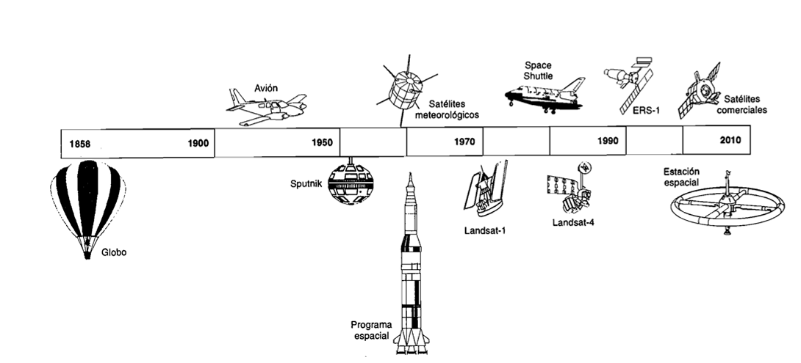

Evolución Histórica

Aspectos legales de la teledetección:
Como se ha indicado anteriormente, la teledetección es la observación exterior de la superficie terrestre. El satélite, al no ajustar su órbita a las fronteras nacionales adquieren imágenes de todo el globo, si se adquiere un dato de otro territorio puede implicar una violación de su espacio aéreo; por esta razón y otras en los inicios de la teledetección existió la necesidad de regular jurídicamente esas actividades.
1- La teledetección se realizará en provecho e interés de todos los países, de acuerdo con el derecho internacional.
2- Se presentará el principio de soberanía plena y permanente de los Estados sobre su propia riqueza y recursos naturales, sin perjudicar los lejítimos derechos e intereses del Estado observado.
3- Se promoverá la cooperación internacional sobre recepción, interpretación y archivos de datos, presetándose asistencia técnica.
4- Deberán los Estados informar al secretario Nacional de las Naciones Unidas de los programas de teledetección que se propongan desarrollar, así como los Estados interesados que los soliciten.
5- Se informará a los Estados afectados para prevenir fenómenos perjudiciales para su medio ambiente, y contarán con acceso sin discriminación, y a un costo razonable, de los datos obtenidos sobre su territorio.